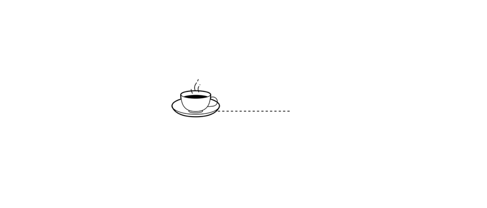

BEST ORGANIC COFFEE
We roast the Best Organic Coffee!.We are Social Entrepreneurs who donate a percentage of sales to Black Girls Code and SF Orphange Foundation. Experience the Highest quality 100% Arabica coffee Beans from along the equatorial belt.We focus on hand roasting delicious Certified Organic coffee and Fair Trade Certified Coffee. Indulge yourself and Drink The Best Organic Coffee.
